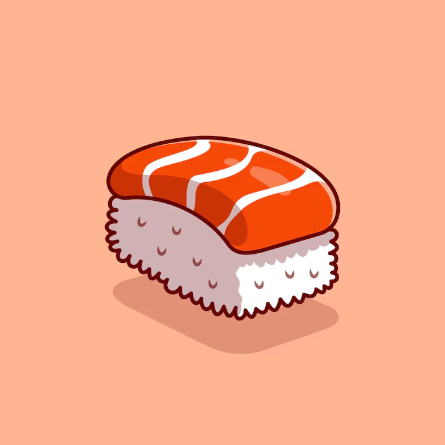

Aficiones
Quedar con los amigos
Es mi aficion favorita porque es donde mejor me lo paso y donde mas tiempo paso,suelo quedar con mis amigos en los pueblos cercanos como Soto del Real o Colmenar Viejo.
Jugar videojuegos
Juego vieojuegos para pasar el tiempo y disfrutar de nuevos mundos virtuales,suelo jugar ARPG,Shooters y mundo abierto.
- Los ARPG son género de videojuegos que combina las mecánicas de progresión y personalización propias de los juegos de rol
- Los shooters son juegos especializados en disparos que se puede jugar solo o en equipo.
- Un juego de mundo abierto es el que te permite moverte libremente y no estas atado a un ajugabilidad lineal.
Comer y hacer shushi

El shushi o la comida oriental es una de mis pasiones,me parece que su forma de cocinar es asombrosa ademas de que los sabores son alucinantes
- Los mejores sitios que yo conozca para ir son:
| Actividad | Frecuencia | Interés |
|---|---|---|
| Quedar con los amigos | Semanal | Alto |
| Jugar videojuegos | Diario | Alto |
| Comer y hacer sushi | Ocasional | Alto |